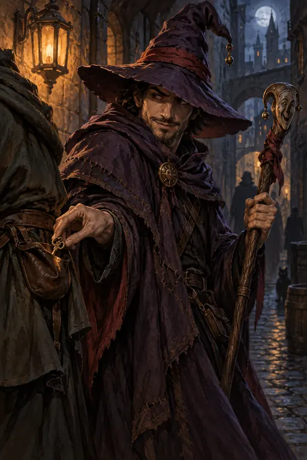
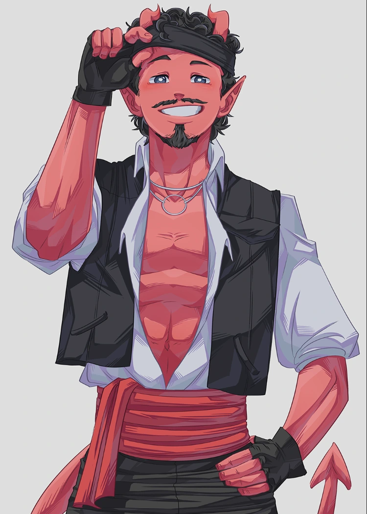
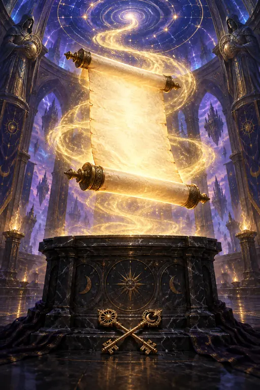

PRINT-AND-PLAY · VERSIÓN 0.1
Duelo del Pergamino
Mohamed, el Mago Pitero, contra Fender, el Bardo Honesto. Un duelo completo de Caoz TCG para jugar lejos de la pantalla.
- 2jugadores
- 80cartas reales
- 20–40minutos por duelo
Incluye el PDF de cartas, líderes, tapete, fichas de Herida, reglas de mesa y reversos comunes.



LISTO PARA LA MESA
Abre, imprime y entra al Domo.
El kit mantiene el duelo de los mazos del juego: Mohamed controla el ritmo y busca el Pergamino; Fender llena la mesa y presiona desde el primer turno.
-
01
Imprime a 100%
Las cartas están preparadas a 63 × 88 mm. No ajustes la escala al imprimir.
-
02
Enfunda y separa
Usa fundas opacas con una carta común detrás. Entrega Gira Mundial a Fender y El Mago Pitero a Mohamed.
-
03
Marca las Heridas
Usa las fichas rojas como en Pokémon: suma el daño sobre cada Personaje y retíralo al curar.
PREPARACIÓN
Lo único que necesitas
- Impresora y papel
- 80 fundas opacas
- Tijeras o guillotina
- Un d20 o la rueda del kit